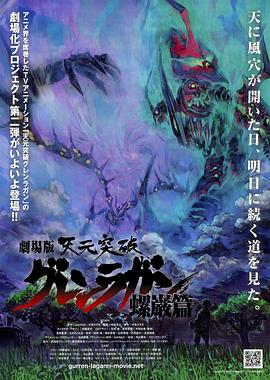

天元突破剧场版 螺岩篇 / 劇場版 天元突破グレンラガン 螺巌篇
又名：天元突破剧场版第二弹 / 天元突破红莲螺岩剧场版 螺岩篇 / 天元突破红莲之眼剧场版：螺岩篇 / Gekijô ban Tengen toppa guren ragan: Ragan hen
热血太热血了。最后机器人头的组合起来惊掉我的下巴。
作品信息
| 导演 | 今石洋之 |
| 编剧 | 中岛一基 |
| 主演 | 柿原彻也 / 福井裕佳梨 / 井上麻里奈 / 伊藤静 / 小西克幸 / 桧山修之 / 谷山纪章 / 斋贺光希 / 小野坂昌也 / 中村大树 / 佐藤利奈 / 植田佳奈 / 阿澄佳奈 / 本田贵子 / 川上贵史 / 近藤隆 / 桐井大介 / 水岛大宙 / 神永梨绪 / 四宫豪 / 堂坂晃三 / 七绪春日 / 石上裕一 / 干萌 / 逢坂力 / 樱井日菜 / 大原崇 / 竹内知子 / 金光宣明 / 原岛梢 / 金野润 / 吉田惠 / 相马幸人 / 疋田高志 / 宫坂俊藏 / 大林隆介 / 日野未步 / 菅生隆之 / 池田成志 / 上川隆也 |
| 类型 | 剧情 / 动画 |
| 制片国家/地区 | 日本 |
| 语言 | 日语 |
| 上映日期 | 2009-04-25(日本) |
| 片长 | 127分钟 |
| IMDb | tt1422651 |
说过什么
2025-11-21 09:40:47
广播 · 看过 · ★★★★★
热血太热血了。最后机器人头的组合起来惊掉我的下巴。
最后一次看到是 2026-10-07T23:12:56+08:00 · 豆瓣原页